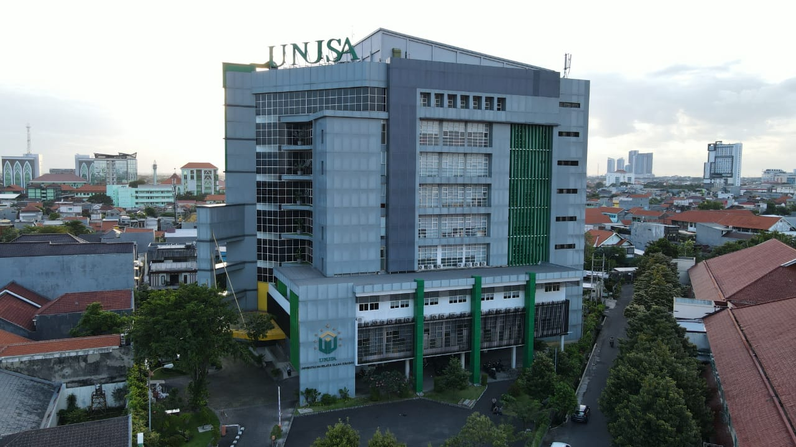

Final Project - Sistem Informasi UNUSA
Manajemen Layanan Teknologi Informasi
Proyek ini bertujuan untuk merancang, mengelola, dan mengoptimalkan layanan teknologi informasi yang selaras dengan kebutuhan bisnis menggunakan kerangka kerja standar industri (ITIL v4).
ITSM
ITIL v4
Service Design

Tim Pengembang
Anggota Kelompok 1
Mahasiswa Sistem Informasi UNUSA yang berkontribusi dalam proyek ini.
Fatchur Rozi
3130023008
M. Muaffa Aditya
3130023042
Moch. Bakhri Ilmi K.
3130023013
Moch. Azizi Alfarizki
3130023043
Roadmap Proyek
Tahapan Pengerjaan FP-MLTI
Timeline pelaksanaan final project berdasarkan target capaian per minggu.
Minggu 10
Identifikasi Layanan Eksisting
Identifikasi daftar layanan TI dan manajemen layanan TI eksisting.
Artefak:
- Katalog Layanan TI
- Manajemen layanan TI eksisting (proses, function + peran, dan alat bantu)
Minggu 11
Identifikasi MLTI Ideal & Gap
Identifikasi MLTI ideal dan analisis kesenjangan (Gap Analysis).
Artefak:
- MLTI ideal
- Daftar kesenjangan dan rekomendasi
Minggu 12
Katalog Layanan To-Be
Usulan katalog layanan TI yang baru (to be).
Artefak:
- Katalog layanan TI
Minggu 13
Struktur Service Desk & SOP
Kajian usulan struktur unit IT Service Desk dan SOP MLTI.
Artefak:
- Usulan struktur unit IT Service Desk to-be
- SOP MLTI
Minggu 14
Teknologi Penunjang
Kajian usulan teknologi penunjang MLTI.
Artefak:
- Usulan desain tools IT Service Desk